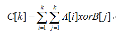
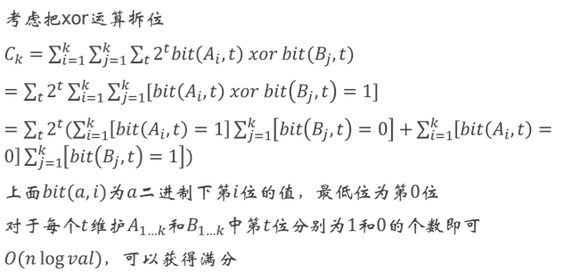

原文连接:https://www.cnblogs.com/I-Love-You-520/p/11623277.html
T1 一道数论神题
题目
【题目描述】
LYK有一张无向图G={V,E}，这张无向图有n个点m条边组成。并且这是一张带权图，只有点权。
LYK想把这个图删干净，它的方法是这样的。每次选择一个点，将它删掉，但删这个点是需要代价的。
假设与这个点相连的还没被删掉的点是u1,u2,…,uk。LYK将会增加 a[u1],a[u2],…,a[uk]的疲劳值。
它想将所有点都删掉，并且删完后自己的疲劳值之和最小。你能帮帮它吗？
【输入格式】
第一行两个数n,m表示一张n个点m条边的图。
第二行n个数ai表示点权。
接下来m行每行三个数u,v，表示有一条连接u,v的边。数据保证任意两个点之间最多一条边相连，并且不存在自环。
【输出格式】
你需要输出这个最小疲劳值是多少。
【输入样例】
4 3
10 20 30 40
1 4
1 2
2 3【输出样例】
40【数据规模】
对于30%的数据n≤10。
对于60%的数据n,m≤1000。
对于 100%的数据1≤n,m,ai≤100000。
解析
久违的送分题
贪心思想，将每个点对与其连接的点的贡献从大到小排序，依次删除即可。
Code


#include <algorithm> #include <iostream> #include <cstring> #include <string> #include <cstdio> #include <vector> #include <cmath> using namespace std; inline int read() { int num=0; char ch=getchar(); while(ch<'0'||ch>'9') ch=getchar(); while(ch>='0'&&ch<='9') { num=(num<<1)+(num<<3)+ch-'0'; ch=getchar(); } return num; } const int N=100100; struct rec{ int w,num; }a[N]; int n,m,b[N]; long long ans; bool v[N]; vector<int> edge[N]; bool cmp(rec x,rec y) { return x.w>y.w; } int main() { //freopen("god.in","r",stdin); //freopen("god.out","w",stdout); memset(v,false,sizeof(v)); n=read(),m=read(); for(int i=1;i<=n;i++) a[i].w=read(),a[i].num=i,b[i]=a[i].w; for(int i=1;i<=m;i++) { int x=read(),y=read(); edge[x].push_back(y),edge[y].push_back(x); } sort(a+1,a+n+1,cmp); for(int i=1;i<=n;i++) { int x=a[i].num; v[x]=true; for(int j=0;j<edge[x].size();j++) if(!v[edge[x][j]]) ans+=b[edge[x][j]]; } cout<<ans; return 0; }
T2 数组异或
题目
【题目描述】
xor——异或，和and与or一样，是一种重要的逻辑运算，他的运算规律是0xor 0=0，1 xor 1=0，1 xor 0=1，0 xor 1=1。
两个整数之间的异或是将两个整数转化成二进制，对他们的每一位分别进行xor操作，例：6(110) xor 13(1101) = 11(1011)
现在我们要介绍一种新的操作——数组异或，将两个相同大小（假设都为n）的数组A、B异或成一个新数组C，则新数组必满足:

现在给你数组大小n，和两个数组A,B
求他们的异或数组C
由于最终答案可能过大，你需要对C的每个元素对109+7取模
【输入格式】
一共3行。
第一行一个正整数N。
接下来两行每行N个正整数，表示数组A、B。
【输出格式】
一共1行，N个正整数，表示数组C。
【输入样例】
7
20670 1316 25227 8316 21095 28379 25235
19745 6535 14486 5460 15690 1796 12403【输出样例】
7583 52096 161325 276944 453024 675974 958287【数据规模】
对于50%的数据，N≤100。
对于全部的数据，N≤105。
解析
数论不太懂，以下是出题人的题解。

Code
#include <algorithm> #include <iostream> #include <cstring> #include <string> #include <cstdio> #include <cmath> using namespace std; inline int read() { int num=0; char ch=getchar(); while(ch<'0'||ch>'9') ch=getchar(); while(ch>='0'&&ch<='9') { num=(num<<1)+(num<<3)+ch-'0'; ch=getchar(); } return num; } const int N=133333,mod=1000000007; int n,a[N],b[N],aa[33][2],bb[33][2]; int main() { //freopen("xorarray.in","r",stdin); //freopen("xorarray.out","w",stdout); n=read(); for(int i=1;i<=n;i++) a[i]=read(); for(int i=1;i<=n;i++) b[i]=read(); for(int i=1;i<=n;i++) { long long c=0; for(int j=0;j<=30;j++) { aa[j][(a[i]>>j)&1]++,bb[j][(b[i]>>j)&1]++; long long cc=((long long)aa[j][0]*bb[j][1]+(long long)aa[j][1]*bb[j][0])%mod*(1<<j)%mod; c=(c+cc)%mod; } cout<<c<<" "; } return 0; }
T3 侦探游戏
题目
【题目描述】
小W最近沉迷一个侦探游戏，在这个游戏中会不断出现命案，而小W作为主角，需要不断地收集各种关键证据，只有当所有的关键证据都被找到，你才能驳倒所有人错误的判断，找出真正的凶手。
一共有N个关键证据以及M条信息，每条信息如下所示 : 如果你已经掌握了证据i，那么你可以通过k个时间的搜索和推理得到证据j，同样的，如果你掌握了证据j你也可以通过k个时间得到证据i。
游戏开始时玩家通过初步观察现场已经得到了证据1，于此同时，每个玩家在游戏开始阶段时都能获得一个特殊技能来加快游戏进度，增加趣味性。小W 选了一个他以前从来没用过的技能:好运。这是一个被动技能，系统会在游戏开始时选定一对证据(a,b)（a≠b）当小W发现其中一个证据的时候，他会很好运地立即获得另外一个证据（不计入时间）。
但是这个技能是完全随机的，小W完全不知道进入游戏后系统会挑选哪一对证据，他希望你能帮助他算出他花在本轮游戏上的时间的期望值，这样他心里能有点B数。
提供的信息保证: i不会等于j，每个k值都互不相同，N个证据都能被得到。
【输入格式】
一共M+1行。
第一行两个正整数N和M，表示证据数量和信息数量。
接下来M行，每行三个数字i,j,k表示一个信息
【输出格式】
共1行，1个整数（期望值是实数，但这里请直接保留2位小数输出）。
【输入样例】
3 3
1 2 3
1 3 2
2 3 5【输出样例】
2.33【数据规模】
对于20%的数据，N≤100
对于60%的数据，N≤1000
对于全部的数据，N≤20000，M≤105，1≤k≤106。
解析
一条边权为w的边，如果把MST上所有边权小于w的边加入，且该边加入后联通的点对数增加了K，那么路径上最大边权为w的点对数即为K。
所以可以用一个并查集，把边权从小到大加边，对于边(u,v,w)，答案累加sizeu*sizev*w，再合并u,v两点所属联通块。(sizei表示点i所属联通块的大小)。
Code
#include <algorithm> #include <iostream> #include <cstring> #include <string> #include <cstdio> #include <cmath> using namespace std; inline int read() { int num=0,w=1; char ch=getchar(); while(ch<'0'||ch>'9') { if(ch=='-') w=-1; ch=getchar(); } while(ch>='0'&&ch<='9') { num=(num<<1)+(num<<3)+ch-'0'; ch=getchar(); } return num*w; } const int N=33333,M=133333; struct rec{ int u,v,d; }edge[M]; int n,m,fa[N],s[N]; long long cnt,sum; bool cmp(rec x,rec y) { return x.d<y.d; } int find(int x) { if(fa[x]==x) return fa[x]; return fa[x]=find(fa[x]); } int main() { n=read(),m=read(); for(int i=1;i<=m;i++) edge[i].u=read(),edge[i].v=read(),edge[i].d=read(); sort(edge+1,edge+m+1,cmp); for(int i=1;i<=n;i++) fa[i]=i,s[i]=1; for(int i=1;i<=m;i++) { int x=find(edge[i].u),y=find(edge[i].v); if(x==y) continue; sum+=edge[i].d,cnt+=(long long)s[x]*s[y]*edge[i].d,s[x]+=s[y],fa[y]=x; } double ans=sum-2.0*cnt/n/(n-1); printf("%.2lf",ans); return 0; }
T4 天上掉馅饼
题目
【题目描述】
小G进入了一个神奇的世界，在这个世界，天上会掉下一些馅饼。今天，天上会随机掉下k个馅饼。
每次天上掉下馅饼，小 G 可以选择吃或者不吃（必须在下一个馅饼掉 下来之前作出选择，并且现在决定不吃的话以后也不能吃）。
馅饼有n种不同的馅，根据物理定律，天上掉下这n种馅饼的概率相 同且相互独立。然而，每一种馅饼i都有一个前提馅饼集合Si。只有当Si中 的馅饼都吃过之后，才能吃第i 种馅饼。比如说，韭菜馅馅饼的S中有白菜猪肉馅饼和鲜虾馅饼，那么小G只有在吃过白菜猪肉馅饼和鲜虾馅饼之后，才能吃韭菜馅的馅饼。
同时，每个馅饼还有一个美味值Pi。今天一天小G的幸福度，等于小G吃到的所有馅饼的美味值之和。注意：Pi 可能是负数。
现在考虑，采用最优策略的前提下，小G这一天期望的幸福度是多少？
【输入格式】
第一行两个正整数k和n，表示馅饼的数量和种类。
以下n行，每行若干个数，描述一种馅饼。其中第一个数代表美味值，随后的整数表示该馅饼的前提馅饼，以0结尾。
【输出格式】
输出一个实数，保留6位小数，即在最优策略下期望的幸福度。
【输入样例】
1 2
1 0
2 0【输出样例】
1.500000【数据规模】
对于20%的数据，所有的馅饼都没有“前提馅饼”。
对于50%的数据，1≤k≤10，1≤n≤10。
对于100%的数据，1≤k ≤100，1≤ n≤15，美味度为[-106,106]的整数。
解析
n只有15，显然状压DP，令f[i][j]表示在第1轮到第i-1轮内是否取过状态为j的最大期望得分。
则状态转移方程为：（1≤k≤n）
- j状态满足吃第k种馅饼的条件，则不吃为f[i+1][j]，吃则为f[i+1][j|(1<<k-1)]+Pk，取两者最大值累加f[i][j]即可；
- j状态不满足吃第k种馅饼的条件，则不能吃，即f[i][j]=f[i+1][j]。
至于期望值，虽然很高端的样子，但实际上，由于f[i][j]覆盖了第i轮吃n种馅饼的情况，所以对于每个f[i][j]，均除以n即可。
答案即为f[1][0]。
Code
#include <algorithm> #include <iostream> #include <cstring> #include <string> #include <cstdio> #include <cmath> using namespace std; inline int read() { int num=0,w=1; char ch=getchar(); while(ch<'0'||ch>'9') { if(ch=='-') w=-1; ch=getchar(); } while(ch>='0'&&ch<='9') { num=(num<<1)+(num<<3)+ch-'0'; ch=getchar(); } return num*w; } const int N=16,K=120,T=1<<15; int k,n,v[N],d[N]; double f[K][T]; int main() { k=read(),n=read(); for(int i=1;i<=n;i++) { v[i]=read(); int x=read(); while(x) d[i]+=1<<(x-1),x=read(); } for(int i=k;i>=1;i--) for(int j=0;j<1<<n;j++) { for(int p=1;p<=n;p++) if((j&d[p])==d[p]) f[i][j]+=max(f[i+1][j],f[i+1][j|(1<<(p-1))]+v[p]); else f[i][j]+=f[i+1][j]; f[i][j]/=n; } printf("%.6f",f[1][0]); return 0; }